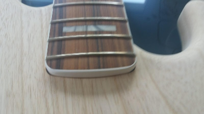
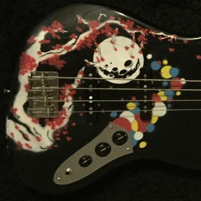
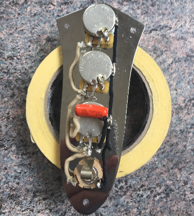
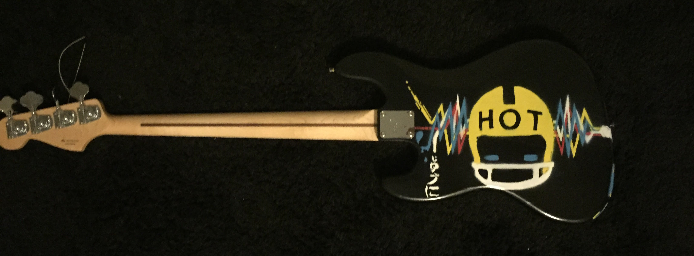

The first stage of the project was to choose the parts I was going to use.
Even if you can build any kind of bass guitar, there are parts that won't fit together.
So if you do not want to have to re-cut certain parts to fit them, you need to be careful.
Given that I hadd invested most of my savings in this project, I was not quite ready to test my carpentry skills on it as well.
So I opted for safety by choosing a classic Fender Jazz Bass for the overall look of the body and neck, so that the assembly would be perfect.

I am only going to talk about one other part of the set, because it is really important to the whole design.
I wanted the bass guitar to look like an articulated piece when it was painted.
I was not too keen on the idea of having a pickguard because I assumed I would be playing with my fingers and that, since I was painting the whole thing, I might as well save the room.
Therefore, I opted for a rocket-shaped tone control/output plate. This way, this part is incorporated into the final design of the instrument and does not clutter up the front of the instrument.
Finally, for the paint, I opted for a matt finish, which still shows the rings and marks of the wood.
I also chose vivid, matt colours for the main drawings.
You will also need sandpaper, undercoat paint and varnish if you want a long-lasting result.
And here is it:
There are two main drawings on this bass guitar (front and back).
For the front of the double bass (image on the left), I tried to imagine a calm atmosphere with a Japanese cherry tree in flower under the light of the moon, gently swept by the wind.
Meanwhile, a rocket streaks across the sky, leaving behind an almost cartoonish trail.
For the back design (image on the right), I wanted a more electric design featuring my favourite bassist Micheal Peter Balzary "Flee" from the band Red Hot Chili Paper.
To do this, I was inspired by a photo of the band taken for the "Stadium Arcadium" album ("link here").
In this particular photo, Flee is wearing an American football helmet with "HOT" printed on it.
All these motifs were painted on the body of the guitar in successive layers using masking patterns.

The final part of the project was to put it all together. At this point, it was pretty strait forward.
Basically, it is a bit like assembling a piece of furniture, nothing special, except perhaps that you do not have a plan and it is better to know where everything is going.
Then there is soldering the electrical parts: the output jack, the tone controls and the microphones. Again, it is pretty straightforward if you have soldered anything before.
All in all, it was an great project. If you're a musician, there's nothing like having your own instrument, especially if it is designed by you.
If you're interested, I cannot encourage you enough to try it yourself. Ultimately, there is not much that can go wrong if you are careful and plan the whole project.
In particular, if you are building an electric guitar, you do not need a luthier to make sure it sounds right.
Of course, when I look at it today, I see flaws in the design and I would do a better job if I had to do it again.
Nevertheless, the bottom line is that I have a bass guitar that I made myself, which is pretty unique and quite neat.
